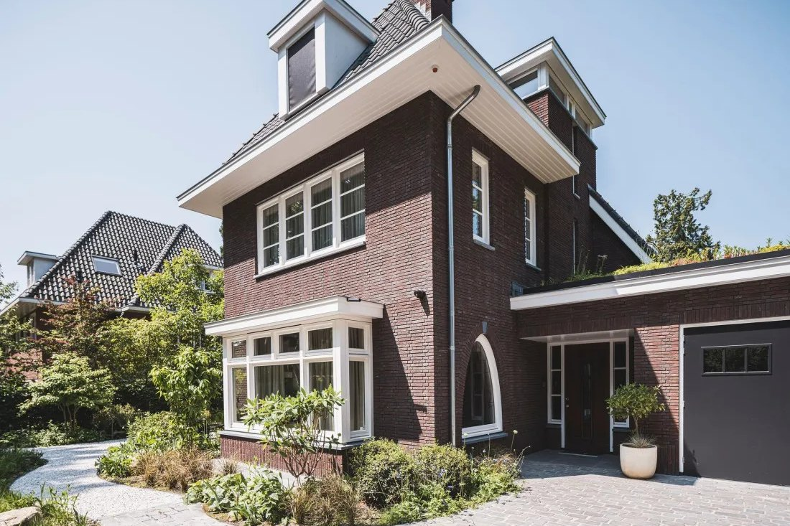
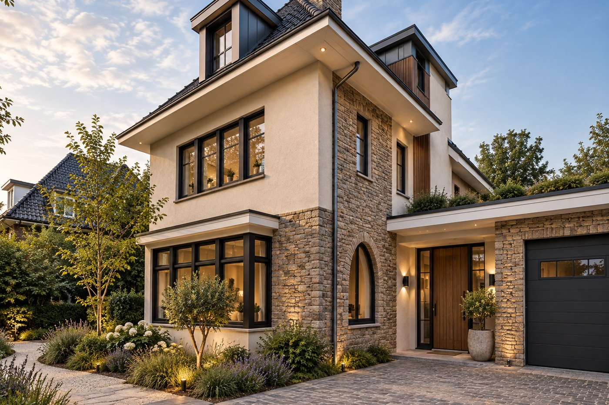
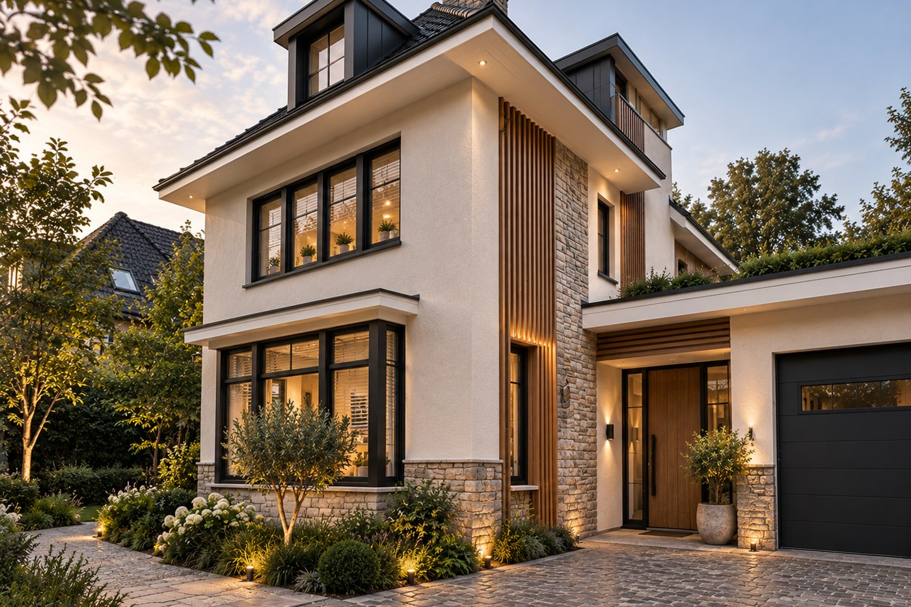
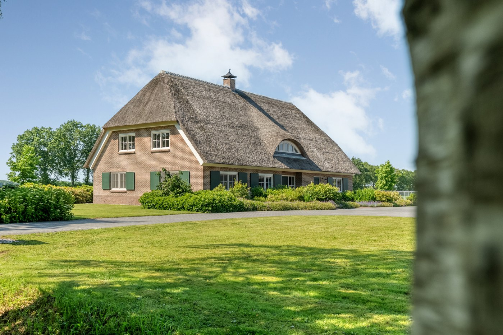
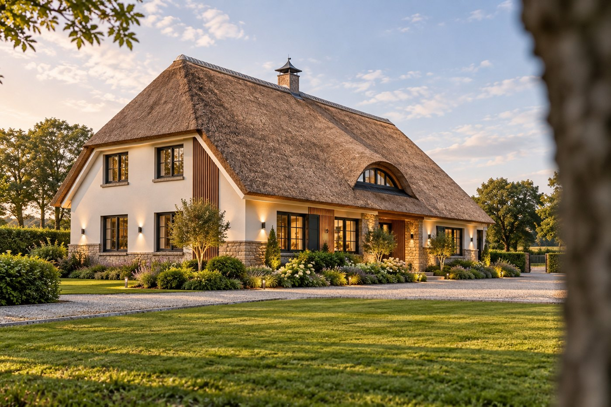
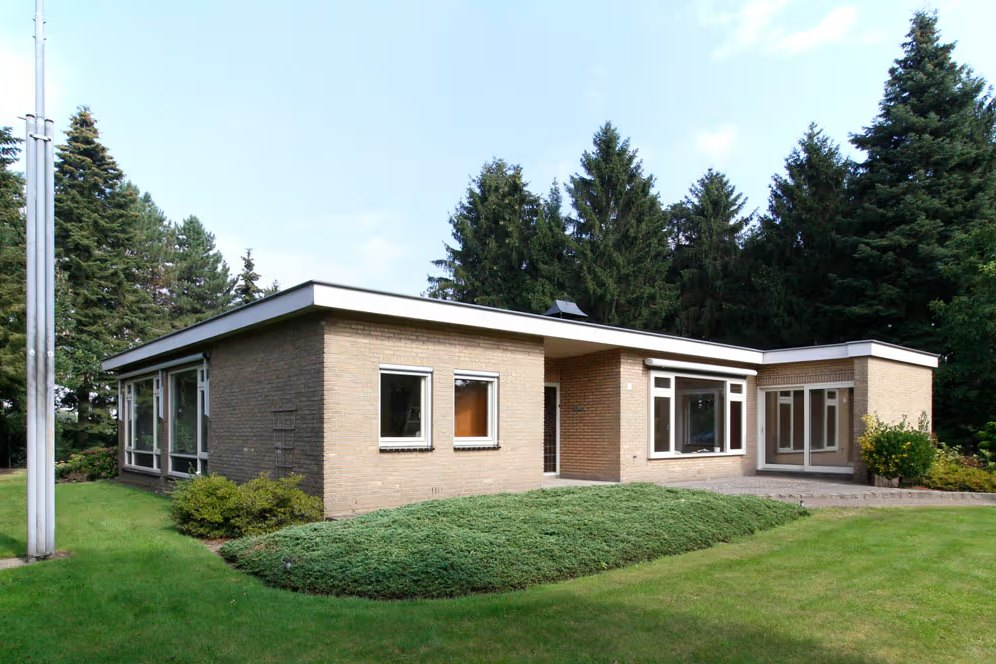
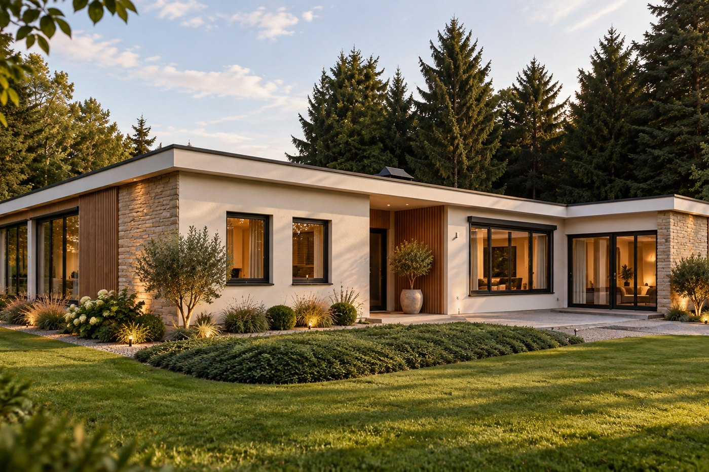

Crepi, natuursteen en hout, vakkundig gecombineerd tot één moderne gevel die isoleert én er prachtig uitziet.
Het verschil zit niet in de grootte, en niet in de prijs. Het zit in de gevel, het eerste wat je ziet, en het enige wat je van buiten écht ervaart. Een Avant-Garde gevel is geen afwerking, maar een keuze voor karakter.
Wij combineren drie materialen die elkaar versterken. Crepi als rustige, strakke basis die de woning inpakt en tot rust brengt. Natuursteen als warm accent, dat diepte en robuustheid geeft op de plekken die ertoe doen. En hout, subtiel en verticaal, dat ritme brengt en de gevel laat leven met het licht.
Woningen die er gedateerd bij stonden, staan er ineens bij alsof ze zo ontworpen zijn. En dat is precies wat het doet: mensen zien het, en willen het ook. Niet omdat het opvalt, maar omdat het klopt.
Onder die schoonheid zit bovendien een volwaardige isolatie. Je woning wordt warmer, stiller en zuiniger, terwijl ze er van buiten prachtig uitziet. Comfort en uitstraling, in één ingreep. Zo hoort een gevel te zijn: geen laag verf over het oude, maar een nieuw begin.
Een strakke, egale isolerende schil die de woning inpakt en de toon zet.
Gemetselde natuursteen op plint en entree geeft diepte, warmte en robuustheid.
Verticale houten latten brengen ritme en een warme, eigentijdse signatuur.
Dezelfde woning, opnieuw gedacht. Links het origineel, rechts de Avant-Garde-uitvoering.







Een goed geïsoleerde gevel bespaart gemiddeld 15 tot 25% op het aardgasverbruik.
Voor buitengevelisolatie geldt in 2026 subsidie tot €30 per m² (Rc ≥ 3,5), via RVO.
Comfort en energiewinst onder een gevel die de woning opnieuw definieert.
Bronnen: Milieu Centraal, RVO / ISDE (gevelisolatie 2026). Bedragen en voorwaarden wijzigen; vraag altijd een actuele opgave.
In een persoonlijk adviesgesprek vertalen we het karakter van uw woning naar een gevel die blijft. Vrijblijvend en geheel op maat.
Plan een adviesgesprek